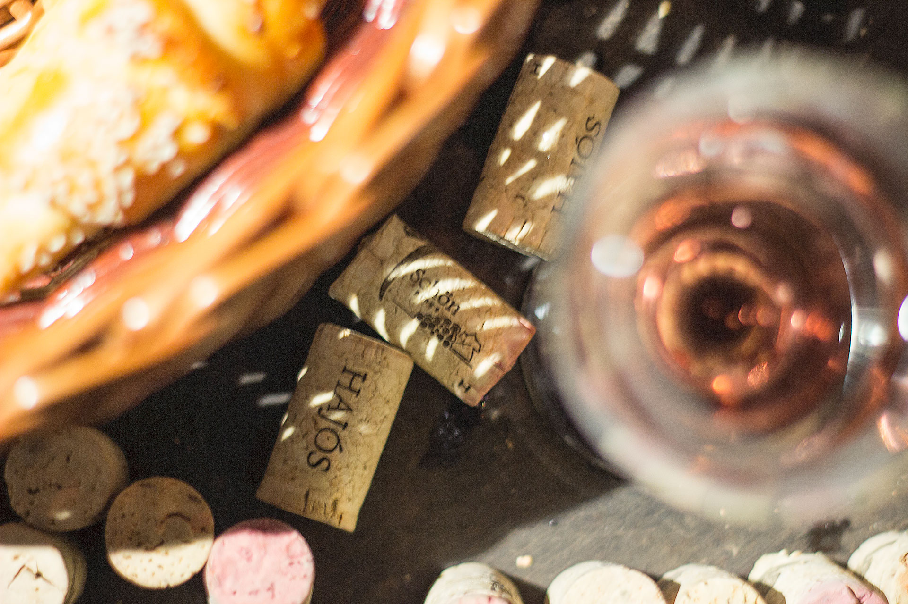

Családi borászatunk a Présház utca végén, a Minerbio Tér kellemes zöld környezetének szomszédságában található, a Hajósi Pincefaluban. Présházunk 30 méter hosszú kortalan pinceága optimális klímát biztosít borainknak, autentikus környezetet az ide látogatóknak.
Tizedik nemzedékeként most rajtunk a sor, hogy életben tartsuk nagyapáink örök eszméit:
Nyitvatartás Előzetes egyeztetés alapján
Cím: Hajósi Pincefalu, Présház utca
...a Présház utca végén, a Minerbio Tér szomszédságában...
TÁJÉKOZTATÓ JELLEGGEL! Borkóstolók és borvacsorák bonyolítása mellett bortúrákat, csettegőzést is szevezünk, továbbá az elszállásolásban is szívesen segítséget nyújtunk.
Foglalj időpontot most, vagy érdeklődj a lehetőségeink után a +36 70/325-1841-es telefonszámon!